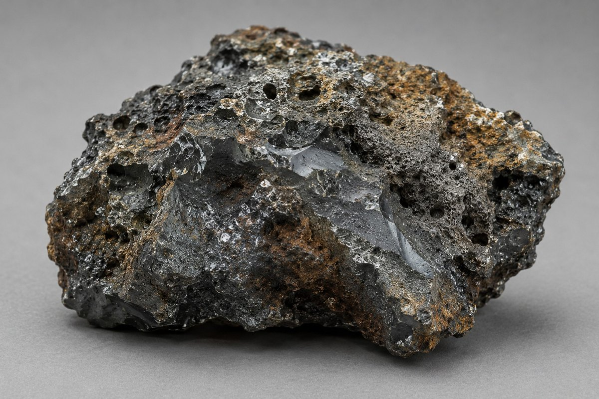

For assessing recovery potential, a standard plant assay by X-ray fluorescence is not sufficient, because it does not separate the forms in which an element occurs. In copper slags, copper may be bound in sulphides and silicates, which makes it unavailable to simple mechanical separation. In manganese ferroalloy slags, a significant share of the element is present as oxides, which are not recoverable metal.
Recovery must be calculated exclusively from the metallic phase — free prills and alloy particles. Two samples with identical total element content can behave differently, depending on how well the grains are liberated during crushing.
Phase separation under laboratory conditions is done by remelting in an induction furnace. Without such verification, any recovery figures remain assumptions. This is what the test programme resolves.


R. Keren works with all secondary metallurgical materials. The processing route is determined by the properties of the specific material and confirmed in the laboratory during project work — a working step, not a restriction on the range of materials.
Every project starts with data, not assumptions.
Equipment and areas of responsibility · All industry questions